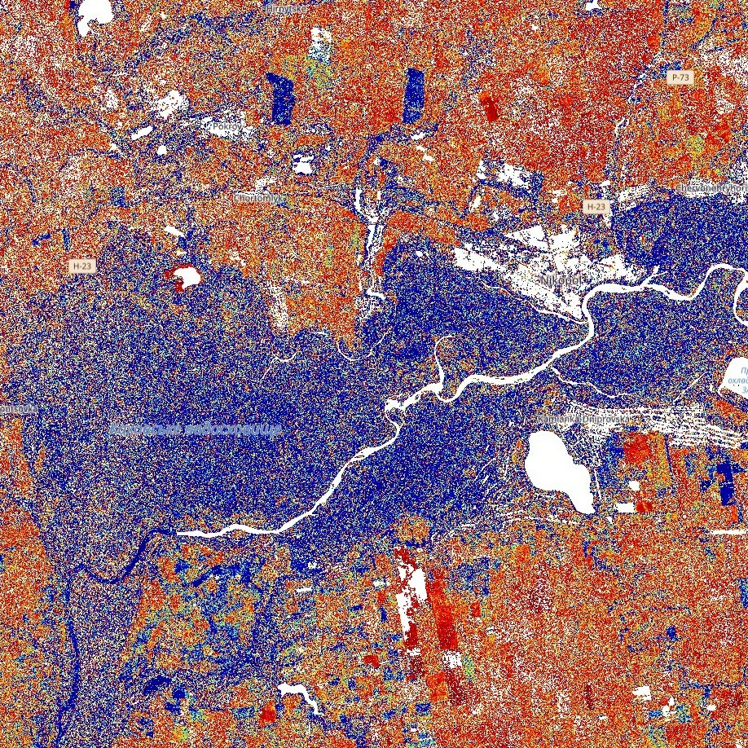
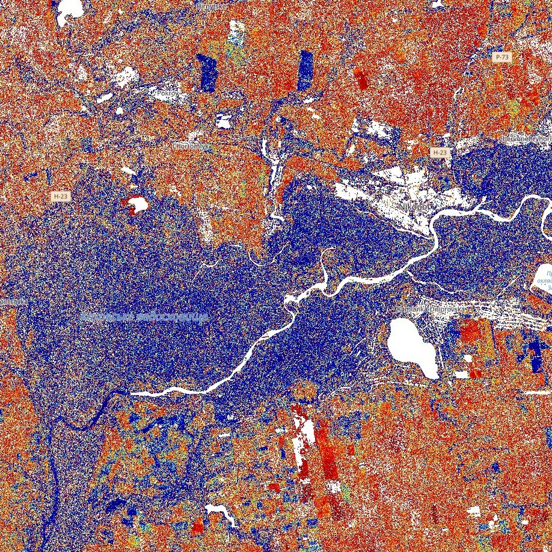

Mirrors surround us
Recently I haven't seen the edge of the Kyiv Sea. The sea was a sky's mirror.
Our eyes are mirrors, they reflect the world around us. Although if you look closely at your eyes in the mirror, you can see yourself.
A wave that has fallen between two mirrors reflects back and forth almost forever.
And mirrors also break.
Нас оточують дзеркала
Недавно я не бачив краю Київського моря. Це море було дзеркалом неба.
Наші очі є дзеркалами, у них відбивається навколишній світ. Хоча якщо пильно придивитись до очей у дзеркалі, то можна побачити себе.
Хвиля, що потрапила між двох дзеркал відбивається туди-назад майже вічно.
А ще дзеркала б'ються.
Our project
We will focus on the use of active remote sensing devices to study the impact of war on infrastructure and environmental ecology. Before looking behind the broken mirror of war, it is worth learning about remote sensing amazing features. If you do not know the magic, everything will seem like physics.
Наш проєкт
Ми зосередимось на використанні активних приладів дистанційного зондування для дослідження впливу воєнних дій на інфраструктуру та екологію довкілля. Перш ніж зазирнути за розбите дзеркало війни, варто дізнатися про дивовижні особливості дистанційного зондування. Якщо не знати магію, все буде здаватися фізикою.
Remote sensing
is the measurement of objects with a device without physical contact. It is divided into passive and active.
Дистанційне зондування
– це вимірювання об’єктів пристроєм без фізичного контакту. Воно поділяється на пасивне та активне.
Magic waves
Some waves are absorbed or reflected by atmospheric components such as water vapor and carbon dioxide,
while some waves can pass through the atmosphere unhindered. Depending on the wavelength,
the waves emitted by active devices can penetrate clouds, which is used by many different instruments around the world.
Using remote sensing results, researchers can distinguish between different rocks or plant species.
Resolution determines how accurately it will be possible to distinguish different features on the Earth's surface.
Магічні хвилі
Деякі хвилі поглинаються або відбиваються компонентами атмосфери, такими як водяна пара та вуглекислий газ,
тоді як деякі хвилі можуть безперешкодно проникати крізь атмосферу. Залежно від довжини,
хвилі, які випромінюють активні прилади, можуть проникати в тому числі крізь хмари, що використовують багато різних приладів по всьому світу.
За допомогою результатів дистанційного зондуавння дослідники можуть розрізняти різні гірські породи чи види рослин.
Роздільна здатність визначає наскільки точно буде можливо розрізнити різні особливості земної поверхні.
Active devices
independently emit signals and record reflections, regardless of lighting or weather.
Активні прилади
самостійно випромінюють сигнали та реєструють відбиття, незалежно від освітлення чи погоди.
Radiometric resolution
is the amount of information in each pixel, i.e. the number of bits representing the recorded energy.
Spectral resolution
is the ability of an device to distinguish finer wavelengths. The narrower the wavelength range for a given band, the finer the spectral resolution.
Time resolution
is the time required for a space device to complete an orbit and revisit the same observation area. The temporal resolution depends on the orbit, the characteristics of the instrument and the width of the observation strip. The temporal resolution of platforms in polar orbit can vary from 1 to 16 days, which should be taken into account when studying short-term changes in a particular area.
Радіометрична роздільна здатність
– це кількість інформації в кожному пікселі, тобто кількість бітів, що представляють записану енергію.
Спектральна роздільна здатність
– це здатність приладу розрізняти більш тонкі довжини хвиль. Чим вужчий діапазон довжин хвиль для даної смуги, тим тонша спектральна роздільна здатність.
Часова роздільна здатність
– це час, необхідний космічній платформі для завершення орбіти та повторного обльоту тієї самої області спостереження. Часова роздільна здатність залежить від орбіти, характеристик приладу та ширини смуги огляду. Часова роздільна здатність платформ на полярній орбіті може варіюватися від 1 до 16 днів, що варто враховувати при дослідження короткострокових змін певної місцевості.
SAR (Synthetic Aperture Radar)
SAR is a moving antenna radar system for large aperture, high resolution synthesis. It operates in different bands (P, L, S, C, X) and different polarizations (HH, HV, VH, VV). We will be working with the Sentinel-1 mission satellites (and a little Sentinel-2 for regular photos). These are several C-band satellites that image our planet in VV and VH polarizations. There are many ways to process this data, so let's use it to look between the cracks in our mirror.
SAR (Synthetic Aperture Radar)
SAR – радіолокаційна система з рухомою антеною для синтезу великої апертури, високої роздільної здатності. Працює в різних діапазонах (P, L, S, C, X) та різних поляризаціях (HH, HV, VH, VV). Ми будемо працювати із супутниками місії Sentinel-1 (і трохи Sentinel-2 для звичайних фото). Це декілька C-band супутників, що знімають нашу планету в VV і VH поляризаціях. Існує безліч способів обробляти ці дані, тож давайте використаємо їх, щоб зазирнути поміж тріщин нашого дзеркала.
SAR Frequencies
P-band 0.3–1 GHz 100–30 cm – experimental range for vegetation mapping.
L-band 1–2 GHz 30–15 cm – medium range with good penetration.
S-band 2–4 GHz 15–7.5 cm – gradually starting to be used for agricultural monitoring.
C-band 4–8 GHz 7.5–3.8 cm – main range, most versatile, used in various tasks.
X-band 8–12 GHz 3.8–2.4 cm – high resolution for studying urban areas and other precise research.
Частоти SAR
P-band 0,3–1 ГГц 100–30 см – експериментальний діапазон для картографування рослинності.
L-band 1–2 ГГц 30–15 см – середні діапазон із хорошим прониканням.
S-band 2–4 ГГц 15–7,5 см – поступово починає застосовуватись для моніторингу сільського господарства.
C-band 4–8 ГГц 7,5–3,8 см – основний діапазон, найбільш універсальний, використовується в різних задачах.
X-band 8–12 ГГц 3,8–2,4 см – висока роздільна здатність для вивчення урбанізованої місцевості та інших точних досліджень.
SAR polarization
determines the orientation of the electric field vector of the radio wave. Linear polarizations include horizontal (H) and vertical (V). Channel designations: the first letter is transmission, the second is reception, that is:
HH: Both transmitted and received horizontally
VV: Transmitted vertically, received vertically
HV: Transmitted horizontally, received vertically
VH: Both transmitted and received horizontally
What this means in practice, we will explain in real examples a little later.
Поляризація SAR
– визначає орієнтацію вектора електричного поля радіохвилі. Лінійні поляризації включають горизонтальну (H) та вертикальну (V). Позначення каналів: перша літера – передача, друга – приймання, тобто:
HH: І передано, і прийнято горизонтально
VV: Передано вертикально, прийнято вертикально
HV: Передано горизонтально, прийнято вертикально
VH: І передано, і прийнято горизонтально
Що це означає на практиці ми розгянемо на реальних прикладах трохи згодом.
6 green pixels?
On March 16, 2022, the russian armed forces carried out an airstrike on the Donetsk Drama Theater in Mariupol.
The Sentinel-1A satellite flew over Mariupol at night shortly before the strike.
Look closely at the image after the attack and compare it with the photo - a green spot appears exactly at the point of impact on the SAR image.
6 green pixels - over 600 human lives.
RGB = (5.5 * VH > 0.5, VV, VH * 8) - this is how the colors in this image are formed.
The bright green color means a significant increase in the VV component. The main source of VV is rough surfaces that randomly reflect waves in different directions.
6 зелених пікселів?
16 березня 2022 року російські збройні сили завдали бомбового авіаційного удару по Донецькому драматичному театрі в Маріуполі.
Супутник Sentinel-1A пролетів над Маріуполем вночі незадовго до удару.
Придивіться до зображення після атаки та порівняйте з фото – рівно в точці влучання на SAR знімку з'являється зелена пляма.
6 зелених пікселів – понад 600 людських життів.
RGB = (5.5 * VH > 0.5, VV, VH * 8) – так утворюються кольори на цьому зображенні.
Яскравий зелений колір означає значне збільшення VV складової. Основним джерелом VV є шорсткі поверхні, що хаотично відбивають хвилі в різні сторони.
Azovstal
Without leaving Mariupol, one cannot help but recall the battles for Azovstal. Their traces can also be seen on the SAR image – the TLC, one of the largest premises on the territory of the plant, is gradually turning white. Unlike the chaotically destroyed drama theater, here the many weeks of shelling have created a kind of "open box" – the ground covered with debris and the remains of the walls have simultaneously increased both the VV and VH components in the signal. On the optical image, the difference is barely noticeable.
Азовсталь
Не виходячи з Маріуполя, не можна не згадати бої за Азовсталь. Їх слід також можна побачити на SAR знімку – ТЛЦ, одне з найбільших приміщень на території заводу, поступово білішає. На відміну від хаотично зруйнованого драмтеатру, тут багатотижневі обстріли утворили своєрідну "відкриту коробку" – земля покрита уламками та залишки стін підвищили одночасно і VV, і VH складові у сигналі. На оптичному знімку різниця ледь помітна.
 

Kakhovka Desert
One of SAR’s superpowers is its ability to see water better than any other method of observation from space.
One of russian war crimes is the destruction of the Kakhovka hydroelectric dam.
The VV component is sensitive to water, so using simple formulas, it is possible to track the land over a certain period of time
and average out the approximate soil moisture. The images above show soil moisture for 2017-2019 and 2023-2025.
We are clearly seeing an ecological catastrophe – soils that had been under water for decades began to dry out rapidly,
the groundwater level dropped by tens of meters, which led to the dehydration of nearby territories.
One of the largest mirrors in Ukraine has become the focus of dust storms.
Каховська пустеля
Одна із суперсил SAR – бачити воду краще за будь який з інших способів спостереження із космосу.
Один із російських воєнних злочинів – знищення греблі Каховської гідроелектростанції.
VV складова чутлива до води, тож із застосуванням нескладних формул можна прослідкувати за землею на певному періоді часу
та усереднити приблизну вологість ґрунту. На зображеннях вище показано вологість ґрунту за 2017-2019 та 2023-2025 рр.
Ми наочно бачимо екологічну катастрофу – ґрунти, які десятиліттями були під водою, почали швидко висихати,
рівень ґрунтових вод впав на десятки метрів, що призвело до обезводнення прилеглих територій.
Одне з найбільших дзеркал України перетворилось на осередок пилових бур.
The scale of the disaster
RVI = 8HV/(HH + VV + 2HV) ≈ 8HV/(2VV + 2HV)
This is the formula for the radar vegetation index, which allows you to monitor the growth of agricultural crops in the fields.
Based on this formula, the visualization above was created – we monitor the growth of crops during July of a certain year and can see whether they are growing, whether they have been harvested, or whether there is just wild grass.
While it is difficult to see significant changes in optical images, in SAR images the front line swept across our territory with a black stripe.
Масштаб катастрофи
RVI = 8HV/(HH + VV + 2HV) ≈ 8HV/(2VV + 2HV)
Це формула радіолокаційного індексу рослинності, що дозволяє слідкувати за ростом сільсько-господарських культур на полях.
На основі цієї формли створено візуалізацію вище – ми слідкуємо за ростом культур впродовж липня певного року і можемо бачити чи вони ростуть, чи були зібрані, чи там просто дика трава.
В той час як на оптичних знімках складно розгледіти значні зміни, на знімках SAR лінія фронту пронеслася по нашій території чорною смугою.
Ongoing prospects
SAR is a powerful tool that allows us to see the effects of war in a clear and visible way. Our primary task is to tell and show it the world
from a new perspective, using modern advanced tools. However, SAR can do more.
Using private satellite data can allow us to use SAR directly to detect damage, rather than to confirm it.
High-resolution data allows us to distinguish vegetation types and monitor their recovery.
L-band, SLC images and InSAR allow us to obtain maps of the Earth's surface change with extraordinary accuracy, and X-band has even had
practical application at the beginning of a full-scale invasion to monitor the Black Sea.
Mirrors surround us. But even one blow can be enough to make them crack.
Подальші перспективи
SAR – потужний інструмент, який дозволяє наочно побачити, які наслідки має війна. Наша першочергова задача розказати та показати це світу
під новим кутом, із застосуванням сучасних просунутих інструментів. Проте SAR може більше.
Використання даних приватних супутників може дозволити використавувати SAR напряму для виявлення руйнувань, а не для їх підтвердження.
Дані високої роздільної здатності дозволяють відрізняти види рослинності та слідкувати за їх відновленням.
L-band, SLC зображення та InSAR дозволяють отримувати мапи зміни земної поверхні з надзвичайною точність, а X-band вже навіть мав
практичне застосування на початку повномасштабного вторгнення для моніторингу Чорного моря.
Нас оточують дзеркала. Але навіть одного удару може бути достатньо, щоб вони почали тріскатись.
SLC product
is an image with the real and imaginary components of the received wave separated. It can be used for interferometry.
SLC зображення
– це зображення з розділеними реальною і уявною складовою отриманої хвилі. Може застосовуватись для інтерферометрії.